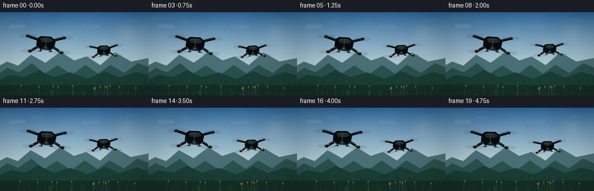
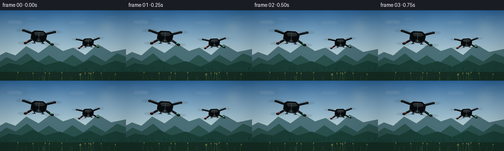

CODING AGENTS AS PIXEL WORLD MODELS
traex/GPT-5.6-Sol · instance_preservation_0042
点击播放 · 原生 RGB 像素
逐轮保存的候选
回放视频、检查图与代码变化。
每份候选均可单独播放。实际图片检查记录在下方工具轨迹中。
候选 01播放与检查图
点击播放 · 原生 RGB 像素


展开代码变化
--- 上一保存版本
+++ 本次保存版本
@@ -0,0 +1,190 @@
+from pathlib import Path
+import math
+import numpy as np
+from PIL import Image, ImageDraw, ImageFilter
+import artifact_io
+
+W, H, N = 256, 144, 20
+SS = 4
+SW, SH = W*SS, H*SS
+rng = np.random.default_rng(420042)
+
+# Fixed tiny cloud wisps and foliage details preserve coherence across the shot.
+clouds = [
+ (30, 24, 27, 7, 0.45), (63, 17, 19, 5, 0.25),
+ (157, 25, 30, 7, 0.25), (228, 14, 22, 5, 0.25),
+]
+far_trees = [(float(rng.uniform(-10,266)), float(rng.uniform(2.0,7.0))) for _ in range(75)]
+foreground_stems = [(float(rng.uniform(-10,266)), float(rng.uniform(8,18)), float(rng.uniform(-3,3))) for _ in range(34)]
+
+def sc(v): return int(round(v*SS))
+def pts(seq): return [(sc(x),sc(y)) for x,y in seq]
+
+def background(frame):
+ t = frame/(N-1)
+ yy = np.linspace(0, 1, SH)[:,None]
+ # Clear late-afternoon sky, bright around the horizon.
+ top = np.array([43, 103, 159.], dtype=float)
+ horizon = np.array([205, 224, 222.], dtype=float)
+ a = np.clip(yy/0.78, 0, 1)**0.82
+ row = top[None,:]*(1-a[:,:,None]) + horizon[None,:]*a[:,:,None]
+ arr = np.repeat(row, SW, axis=1)
+ # subtle atmospheric texture, coherent and not distracting
+ ygrid,xgrid=np.mgrid[0:SH,0:SW]
+ grain = 1.5*np.sin(xgrid/83 + ygrid/61) + .8*np.sin(xgrid/31-ygrid/93)
+ arr += grain[:,:,None]
+ im = Image.fromarray(np.uint8(np.clip(arr,0,255)), 'RGB').convert('RGBA')
+ d=ImageDraw.Draw(im,'RGBA')
+ pan = -2.0*t
+ # Warm sun glow, positioned away from drone silhouettes.
+ glow = Image.new('RGBA',(SW,SH),(0,0,0,0)); gd=ImageDraw.Draw(glow,'RGBA')
+ sx,sy=sc(217+pan*.2),sc(34)
+ for rad,alpha in [(24,4),(17,7),(11,13),(6,28)]:
+ gd.ellipse((sx-sc(rad),sy-sc(rad),sx+sc(rad),sy+sc(rad)),fill=(255,231,170,alpha))
+ glow=glow.filter(ImageFilter.GaussianBlur(sc(5)))
+ im=Image.alpha_composite(im,glow)
+ # distant clouds, soft layered ellipses
+ cloud_layer=Image.new('RGBA',(SW,SH),(0,0,0,0)); cd=ImageDraw.Draw(cloud_layer,'RGBA')
+ for cx,cy,cw,ch,op in clouds:
+ cx += pan*.25
+ for j in range(5):
+ ox=(-.38+j*.19)*cw; oy=math.sin(j*1.7)*ch*.18
+ rr=cw*(.28 + .05*(j%2)); ry=ch*(.55+.10*((j+1)%2))
+ cd.ellipse((sc(cx+ox-rr),sc(cy+oy-ry),sc(cx+ox+rr),sc(cy+oy+ry)), fill=(245,250,249,int(72*op)))
+ cd.ellipse((sc(cx-cw*.55),sc(cy),sc(cx+cw*.55),sc(cy+ch*.62)),fill=(242,248,247,int(60*op)))
+ cloud_layer=cloud_layer.filter(ImageFilter.GaussianBlur(sc(2.8)))
+ im=Image.alpha_composite(im,cloud_layer)
+ d=ImageDraw.Draw(im,'RGBA')
+ # layered mountain ridges for depth/parallax
+ xoff=pan*.45
+ ridge1=[(-10,97),(12,85),(31,92),(53,73),(78,87),(104,68),(128,83),(149,76),(173,91),(198,69),(226,85),(270,76),(270,145),(-10,145)]
+ ridge1=[(x+xoff,y) for x,y in ridge1]
+ d.polygon(pts(ridge1),fill=(75,112,120,255))
+ # haze rim on ridge
+ d.line(pts(ridge1[:-2]),fill=(159,187,181,130),width=sc(.7),joint='curve')
+ xoff2=pan*.8
+ ridge2=[(-10,112),(13,96),(32,104),(55,88),(77,106),(99,92),(124,108),(147,91),(169,106),(190,91),(214,105),(238,88),(270,101),(270,145),(-10,145)]
+ d.polygon(pts([(x+xoff2,y) for x,y in ridge2]),fill=(43,82,78,255))
+ # forested low hills
+ d.polygon(pts([(-5,119),(18,108),(43,112),(66,100),(92,112),(121,104),(151,115),(181,102),(206,113),(235,103),(262,111),(262,145),(-5,145)]),fill=(26,63,55,255))
+ for x,h in far_trees:
+ x += pan*1.2
+ base=123+2*math.sin(x*.071)
+ col=(20,55,46,220) if int(x)%2 else (28,69,56,220)
+ d.polygon(pts([(x-h*.24,base),(x,base-h),(x+h*.24,base)]),fill=col)
+ # foreground meadow silhouettes
+ d.rectangle((0,sc(126),SW,SH),fill=(22,48,38,255))
+ for x,h,lean in foreground_stems:
+ x += pan*1.8
+ d.line(pts([(x,145),(x+lean,145-h)]),fill=(59,85,57,230),width=sc(.6))
+ if h>12:
+ d.ellipse((sc(x+lean-1),sc(145-h-2),sc(x+lean+1),sc(145-h+1)),fill=(104,114,66,190))
+ return im
+
+def transform(cx,cy,yaw,scale,x,y):
+ # x/y are local design coordinates; yaw is a subtle screen-plane heading.
+ c,s=math.cos(yaw),math.sin(yaw)
+ return (cx+scale*(x*c-y*s), cy+scale*(x*s+y*c))
+
+def draw_drone(base, cx, cy, size, yaw, phase, identity=0):
+ """Detailed, persistent black quadcopter rendered in layered vector form."""
+ # Draw on a local full-size transparent layer so glows and rotor blur can be filtered.
+ rotor_blur=Image.new('RGBA',(SW,SH),(0,0,0,0)); rb=ImageDraw.Draw(rotor_blur,'RGBA')
+ hard=Image.new('RGBA',(SW,SH),(0,0,0,0)); hd=ImageDraw.Draw(hard,'RGBA')
+ # Identity 0 is a heavier camera drone, identity 1 has an angular compact nose.
+ motors=[(-31,-10),(30,-10),(-26,15),(27,15)]
+ # rear rotor wash first
+ for k,(mx,my) in enumerate(motors):
+ px,py=transform(cx,cy,yaw,size,mx,my)
+ rx=15.0*size; ry=3.25*size
+ # translucent swept rotor disc with brighter rim, unmistakably spinning
+ rb.ellipse((sc(px-rx),sc(py-ry),sc(px+rx),sc(py+ry)),fill=(20,27,30,24),outline=(179,196,197,60),width=max(1,sc(.45)))
+ ang=phase + k*1.37
+ for q in range(3):
+ a=ang+q*math.pi/3
+ dx=math.cos(a)*rx*.93; dy=math.sin(a)*ry*.83
+ rb.line(pts([(px-dx,py-dy),(px+dx,py+dy)]),fill=(173,187,187,62),width=max(1,sc(.55)))
+ rotor_blur=rotor_blur.filter(ImageFilter.GaussianBlur(sc(.45)))
+ base.alpha_composite(rotor_blur)
+ # arms: shadow underlay then graphite highlight, back to front
+ hd=ImageDraw.Draw(hard,'RGBA')
+ arm_order=[0,1,2,3]
+ anchors=[(-7,-3),(7,-3),(-8,4),(8,4)]
+ for k in arm_order:
+ mx,my=motors[k]; ax,ay=anchors[k]
+ p1=transform(cx,cy,yaw,size,ax,ay); p2=transform(cx,cy,yaw,size,mx,my)
+ hd.line(pts([p1,p2]),fill=(4,7,8,255),width=max(sc(4.2*size),2))
+ # cool skylight on upper arm edge
+ ah1=transform(cx,cy,yaw,size,ax,ay-.65); ah2=transform(cx,cy,yaw,size,mx,my-.65)
+ hd.line(pts([ah1,ah2]),fill=(55,67,70,220),width=max(sc(.75*size),1))
+ # motor pods, with fixed distinctive silver rings
+ for k,(mx,my) in enumerate(motors):
+ px,py=transform(cx,cy,yaw,size,mx,my)
+ rr=3.4*size
+ hd.ellipse((sc(px-rr),sc(py-rr*.73),sc(px+rr),sc(py+rr*.73)),fill=(5,8,9,255),outline=(83,94,96,255),width=max(1,sc(.55*size)))
+ hd.ellipse((sc(px-rr*.36),sc(py-rr*.46),sc(px+rr*.36),sc(py+rr*.25)),fill=(31,38,39,255))
+ hd.line(pts([(px-1.7*size,py-1.5*size),(px+1.3*size,py-1.5*size)]),fill=(130,143,143,180),width=max(1,sc(.35*size)))
+ # body drop shadow and body shell
+ shell=[(-15,-7),(-9,-11),(8,-11),(16,-5),(14,7),(7,11),(-9,10),(-16,5)]
+ sh=[transform(cx,cy+1.8*size,yaw,size,x,y) for x,y in shell]
+ hd.polygon(pts(sh),fill=(0,2,3,170))
+ body=[transform(cx,cy,yaw,size,x,y) for x,y in shell]
+ hd.polygon(pts(body),fill=(8,11,13,255),outline=(67,79,81,255))
+ # faceted upper panels that make black object readable
+ panel=[(-10,-6),(-5,-9),(8,-8),(12,-4),(6,-1),(-7,-1)]
+ hd.polygon(pts([transform(cx,cy,yaw,size,x,y) for x,y in panel]),fill=(36,43,45,255))
+ hd.line(pts([transform(cx,cy,yaw,size,-9,-6),transform(cx,cy,yaw,size,8,-8)]),fill=(119,131,132,175),width=max(1,sc(.55*size)))
+ # center spine / stable identity stripe
+ hd.line(pts([transform(cx,cy,yaw,size,0,-8),transform(cx,cy,yaw,size,0,7)]),fill=(62,70,71,190),width=max(1,sc(.7*size)))
+ # forward nose camera gimbal and lens (both keep this same configuration throughout)
+ nose_y=9 if identity==0 else 8
+ gx,gy=transform(cx,cy,yaw,size,0,nose_y)
+ hd.line(pts([transform(cx,cy,yaw,size,-3,5),(gx,gy)]),fill=(22,27,28,255),width=max(1,sc(2*size)))
+ gr=4.0*size if identity==0 else 3.3*size
+ hd.ellipse((sc(gx-gr),sc(gy-gr*.7),sc(gx+gr),sc(gy+gr*.7)),fill=(5,7,8,255),outline=(90,98,98,255),width=max(1,sc(.6*size)))
+ hd.ellipse((sc(gx-gr*.5),sc(gy-gr*.43),sc(gx+gr*.5),sc(gy+gr*.42)),fill=(13,31,39,255),outline=(100,129,139,255),width=max(1,sc(.45*size)))
+ hd.ellipse((sc(gx-gr*.19),sc(gy-gr*.28),sc(gx+gr*.03),sc(gy-gr*.05)),fill=(187,222,226,210))
+ # small, stable navigation lamps on front arms: red left, green right
+ for lx,ly,col in [(-23,12,(242,54,40,255)),(24,12,(63,226,134,255))]:
+ px,py=transform(cx,cy,yaw,size,lx,ly)
+ rad=max(1.2,size*1.35)
+ hd.ellipse((sc(px-rad),sc(py-rad*.65),sc(px+rad),sc(py+rad*.65)),fill=col)
+ # landing struts, subtle but clear
+ for lx in (-7,7):
+ p1=transform(cx,cy,yaw,size,lx,7); p2=transform(cx,cy,yaw,size,lx*1.25,14)
+ hd.line(pts([p1,p2]),fill=(8,10,11,255),width=max(1,sc(1.35*size)))
+ hd.line(pts([(p2[0]-3*size,p2[1]),(p2[0]+3*size,p2[1])]),fill=(12,15,16,255),width=max(1,sc(1.15*size)))
+ base.alpha_composite(hard)
+
+
+def render(i):
+ t=i/(N-1)
+ im=background(i)
+ # Very restrained camera/hover movement. Distinct trajectories and sizes preserve the two instances.
+ # farther right drone is drawn first
+ cx2=178.5 + 1.7*math.sin(t*math.tau*.65+0.3) - 1.0*t
+ cy2=64.0 + 1.8*math.sin(t*math.tau*1.05+1.0)
+ yaw2=-0.055 + .018*math.sin(t*math.tau*.5)
+ draw_drone(im,cx2,cy2,.73,yaw2,phase=i*2.55+1.4,identity=1)
+ # foreground left drone
+ cx1=79.0 + 2.1*math.sin(t*math.tau*.72) + .7*t
+ cy1=53.0 + 1.6*math.sin(t*math.tau*1.0)
+ yaw1=0.045 + .022*math.sin(t*math.tau*.62+.5)
+ draw_drone(im,cx1,cy1,1.03,yaw1,phase=i*2.9,identity=0)
+ # clean cinematic vignette
+ arr=np.asarray(im.convert('RGB')).astype(np.float32)
+ yy,xx=np.mgrid[0:SH,0:SW]
+ nx=(xx-SW/2)/(SW/2); ny=(yy-SH/2)/(SH/2)
+ vign=np.clip(1-.10*(nx*nx+ny*ny),.82,1.0)
+ arr*=vign[:,:,None]
+ out=Image.fromarray(np.uint8(np.clip(arr,0,255))).resize((W,H),Image.Resampling.LANCZOS)
+ return np.asarray(out,dtype=np.uint8)
+
+
+def main():
+ frames=np.stack([render(i) for i in range(N)],axis=0)
+ artifact_io.save(frames,Path(__file__).resolve().parent)
+ print('saved',frames.shape,frames.dtype,'range',frames.min(),frames.max())
+
+if __name__=='__main__':
+ main()
可观测工具轨迹
实际执行的命令与返回图片。
命令 1exit 0
/bin/bash -lc 'cat prompt.txt'
命令 2exit 0
/bin/bash -lc 'cat GENERATION_RULES.md'
命令 3exit 0
/bin/bash -lc "cat task_spec.json && printf '\\n---FILES---\\n' && find . -maxdepth 2 -type f -printf '%p\\n' | sort"
命令 4exit 0
/bin/bash -lc "sed -n '1,240p' artifact_io.py"
命令 5exit 0
/bin/bash -lc "cat > generate.py <<'PY'
from pathlib import Path
import math
import numpy as np
from PIL import Image, ImageDraw, ImageFilter
import artifact_io
W, H, N = 256, 144, 20
SS = 4
SW, SH = W*SS, H*SS
rng = np.random.default_rng(420042)
# Fixed tiny cloud wisps and foliage details preserve coherence across the shot.
clouds = [
(30, 24, 27, 7, 0.45), (63, 17, 19, 5, 0.25),
(157, 25, 30, 7, 0.25), (228, 14, 22, 5, 0.25),
]
far_trees = [(float(rng.uniform(-10,266)), float(rng.uniform(2.0,7.0))) for _ in range(75)]
foreground_stems = [(float(rng.uniform(-10,266)), float(rng.uniform(8,18)), float(rng.uniform(-3,3))) for _ in range(34)]
def sc(v): return int(round(v*SS))
def pts(seq): return [(sc(x),sc(y)) for x,y in seq]
def background(frame):
t = frame/(N-1)
yy = np.linspace(0, 1, SH)[:,None]
# Clear late-afternoon sky, bright around the horizon.
top = np.array([43, 103, 159.], dtype=float)
horizon = np.array([205, 224, 222.], dtype=float)
a = np.clip(yy/0.78, 0, 1)**0.82
row = top[None,:]*(1-a[:,:,None]) + horizon[None,:]*a[:,:,None]
arr = np.repeat(row, SW, axis=1)
# subtle atmospheric texture, coherent and not distracting
ygrid,xgrid=np.mgrid[0:SH,0:SW]
grain = 1.5*np.sin(xgrid/83 + ygrid/61) + .8*np.sin(xgrid/31-ygrid/93)
arr += grain[:,:,None]
im = Image.fromarray(np.uint8(np.clip(arr,0,255)), 'RGB').convert('RGBA')
d=ImageDraw.Draw(im,'RGBA')
pan = -2.0*t
# Warm sun glow, positioned away from drone silhouettes.
glow = Image.new('RGBA',(SW,SH),(0,0,0,0)); gd=ImageDraw.Draw(glow,'RGBA')
sx,sy=sc(217+pan*.2),sc(34)
for rad,alpha in [(24,4),(17,7),(11,13),(6,28)]:
gd.ellipse((sx-sc(rad),sy-sc(rad),sx+sc(rad),sy+sc(rad)),fill=(255,231,170,alpha))
glow=glow.filter(ImageFilter.GaussianBlur(sc(5)))
im=Image.alpha_composite(im,glow)
# distant clouds, soft layered ellipses
cloud_layer=Image.new('RGBA',(SW,SH),(0,0,0,0)); cd=ImageDraw.Draw(cloud_layer,'RGBA')
for cx,cy,cw,ch,op in clouds:
cx += pan*.25
for j in range(5):
ox=(-.38+j*.19)*cw; oy=math.sin(j*1.7)*ch*.18
rr=cw*(.28 + .05*(j%2)); ry=ch*(.55+.10*((j+1)%2))
cd.ellipse((sc(cx+ox-rr),sc(cy+oy-ry),sc(cx+ox+rr),sc(cy+oy+ry)), fill=(245,250,249,int(72*op)))
cd.ellipse((sc(cx-cw*.55),sc(cy),sc(cx+cw*.55),sc(cy+ch*.62)),fill=(242,248,247,int(60*op)))
cloud_layer=cloud_layer.filter(ImageFilter.GaussianBlur(sc(2.8)))
im=Image.alpha_composite(im,cloud_layer)
d=ImageDraw.Draw(im,'RGBA')
# layered mountain ridges for depth/parallax
xoff=pan*.45
ridge1=[(-10,97),(12,85),(31,92),(53,73),(78,87),(104,68),(128,83),(149,76),(173,91),(198,69),(226,85),(270,76),(270,145),(-10,145)]
ridge1=[(x+xoff,y) for x,y in ridge1]
d.polygon(pts(ridge1),fill=(75,112,120,255))
# haze rim on ridge
d.line(pts(ridge1[:-2]),fill=(159,187,181,130),width=sc(.7),joint='curve')
xoff2=pan*.8
ridge2=[(-10,112),(13,96),(32,104),(55,88),(77,106),(99,92),(124,108),(147,91),(169,106),(190,91),(214,105),(238,88),(270,101),(270,145),(-10,145)]
d.polygon(pts([(x+xoff2,y) for x,y in ridge2]),fill=(43,82,78,255))
# forested low hills
d.polygon(pts([(-5,119),(18,108),(43,112),(66,100),(92,112),(121,104),(151,115),(181,102),(206,113),(235,103),(262,111),(262,145),(-5,145)]),fill=(26,63,55,255))
for x,h in far_trees:
x += pan*1.2
base=123+2*math.sin(x*.071)
col=(20,55,46,220) if int(x)%2 else (28,69,56,220)
d.polygon(pts([(x-h*.24,base),(x,base-h),(x+h*.24,base)]),fill=col)
# foreground meadow silhouettes
d.rectangle((0,sc(126),SW,SH),fill=(22,48,38,255))
for x,h,lean in foreground_stems:
x += pan*1.8
d.line(pts([(x,145),(x+lean,145-h)]),fill=(59,85,57,230),width=sc(.6))
if h>12:
d.ellipse((sc(x+lean-1),sc(145-h-2),sc(x+lean+1),sc(145-h+1)),fill=(104,114,66,190))
return im
def transform(cx,cy,yaw,scale,x,y):
# x/y are local design coordinates; yaw is a subtle screen-plane heading.
c,s=math.cos(yaw),math.sin(yaw)
return (cx+scale*(x*c-y*s), cy+scale*(x*s+y*c))
def draw_drone(base, cx, cy, size, yaw, phase, identity=0):
\"\"\"Detailed, persistent black quadcopter rendered in layered vector form.\"\"\"
# Draw on a local full-size transparent layer so glows and rotor blur can be filtered.
rotor_blur=Image.new('RGBA',(SW,SH),(0,0,0,0)); rb=ImageDraw.Draw(rotor_blur,'RGBA')
hard=Image.new('RGBA',(SW,SH),(0,0,0,0)); hd=ImageDraw.Draw(hard,'RGBA')
# Identity 0 is a heavier camera drone, identity 1 has an angular compact nose.
motors=[(-31,-10),(30,-10),(-26,15),(27,15)]
# rear rotor wash first
for k,(mx,my) in enumerate(motors):
px,py=transform(cx,cy,yaw,size,mx,my)
rx=15.0*size; ry=3.25*size
# translucent swept rotor disc with brighter rim, unmistakably spinning
rb.ellipse((sc(px-rx),sc(py-ry),sc(px+rx),sc(py+ry)),fill=(20,27,30,24),outline=(179,196,197,60),width=max(1,sc(.45)))
ang=phase + k*1.37
for q in range(3):
a=ang+q*math.pi/3
dx=math.cos(a)*rx*.93; dy=math.sin(a)*ry*.83
rb.line(pts([(px-dx,py-dy),(px+dx,py+dy)]),fill=(173,187,187,62),width=max(1,sc(.55)))
rotor_blur=rotor_blur.filter(ImageFilter.GaussianBlur(sc(.45)))
base.alpha_composite(rotor_blur)
# arms: shadow underlay then graphite highlight, back to front
hd=ImageDraw.Draw(hard,'RGBA')
arm_order=[0,1,2,3]
anchors=[(-7,-3),(7,-3),(-8,4),(8,4)]
for k in arm_order:
mx,my=motors[k]; ax,ay=anchors[k]
p1=transform(cx,cy,yaw,size,ax,ay); p2=transform(cx,cy,yaw,size,mx,my)
hd.line(pts([p1,p2]),fill=(4,7,8,255),width=max(sc(4.2*size),2))
# cool skylight on upper arm edge
ah1=transform(cx,cy,yaw,size,ax,ay-.65); ah2=transform(cx,cy,yaw,size,mx,my-.65)
hd.line(pts([ah1,ah2]),fill=(55,67,70,220),width=max(sc(.75*size),1))
# motor pods, with fixed distinctive silver rings
for k,(mx,my) in enumerate(motors):
px,py=transform(cx,cy,yaw,size,mx,my)
rr=3.4*size
hd.ellipse((sc(px-rr),sc(py-rr*.73),sc(px+rr),sc(py+rr*.73)),fill=(5,8,9,255),outline=(83,94,96,255),width=max(1,sc(.55*size)))
hd.ellipse((sc(px-rr*.36),sc(py-rr*.46),sc(px+rr*.36),sc(py+rr*.25)),fill=(31,38,39,255))
hd.line(pts([(px-1.7*size,py-1.5*size),(px+1.3*size,py-1.5*size)]),fill=(130,143,143,180),width=max(1,sc(.35*size)))
# body drop shadow and body shell
shell=[(-15,-7),(-9,-11),(8,-11),(16,-5),(14,7),(7,11),(-9,10),(-16,5)]
sh=[transform(cx,cy+1.8*size,yaw,size,x,y) for x,y in shell]
hd.polygon(pts(sh),fill=(0,2,3,170))
body=[transform(cx,cy,yaw,size,x,y) for x,y in shell]
hd.polygon(pts(body),fill=(8,11,13,255),outline=(67,79,81,255))
# faceted upper panels that make black object readable
panel=[(-10,-6),(-5,-9),(8,-8),(12,-4),(6,-1),(-7,-1)]
hd.polygon(pts([transform(cx,cy,yaw,size,x,y) for x,y in panel]),fill=(36,43,45,255))
hd.line(pts([transform(cx,cy,yaw,size,-9,-6),transform(cx,cy,yaw,size,8,-8)]),fill=(119,131,132,175),width=max(1,sc(.55*size)))
# center spine / stable identity stripe
hd.line(pts([transform(cx,cy,yaw,size,0,-8),transform(cx,cy,yaw,size,0,7)]),fill=(62,70,71,190),width=max(1,sc(.7*size)))
# forward nose camera gimbal and lens (both keep this same configuration throughout)
nose_y=9 if identity==0 else 8
gx,gy=transform(cx,cy,yaw,size,0,nose_y)
hd.line(pts([transform(cx,cy,yaw,size,-3,5),(gx,gy)]),fill=(22,27,28,255),width=max(1,sc(2*size)))
gr=4.0*size if identity==0 else 3.3*size
hd.ellipse((sc(gx-gr),sc(gy-gr*.7),sc(gx+gr),sc(gy+gr*.7)),fill=(5,7,8,255),outline=(90,98,98,255),width=max(1,sc(.6*size)))
hd.ellipse((sc(gx-gr*.5),sc(gy-gr*.43),sc(gx+gr*.5),sc(gy+gr*.42)),fill=(13,31,39,255),outline=(100,129,139,255),width=max(1,sc(.45*size)))
hd.ellipse((sc(gx-gr*.19),sc(gy-gr*.28),sc(gx+gr*.03),sc(gy-gr*.05)),fill=(187,222,226,210))
# small, stable navigation lamps on front arms: red left, green right
for lx,ly,col in [(-23,12,(242,54,40,255)),(24,12,(63,226,134,255))]:
px,py=transform(cx,cy,yaw,size,lx,ly)
rad=max(1.2,size*1.35)
hd.ellipse((sc(px-rad),sc(py-rad*.65),sc(px+rad),sc(py+rad*.65)),fill=col)
# landing struts, subtle but clear
for lx in (-7,7):
p1=transform(cx,cy,yaw,size,lx,7); p2=transform(cx,cy,yaw,size,lx*1.25,14)
hd.line(pts([p1,p2]),fill=(8,10,11,255),width=max(1,sc(1.35*size)))
hd.line(pts([(p2[0]-3*size,p2[1]),(p2[0]+3*size,p2[1])]),fill=(12,15,16,255),width=max(1,sc(1.15*size)))
base.alpha_composite(hard)
def render(i):
t=i/(N-1)
im=background(i)
# Very restrained camera/hover movement. Distinct trajectories and sizes preserve the two instances.
# farther right drone is drawn first
cx2=178.5 + 1.7*math.sin(t*math.tau*.65+0.3) - 1.0*t
cy2=64.0 + 1.8*math.sin(t*math.tau*1.05+1.0)
yaw2=-0.055 + .018*math.sin(t*math.tau*.5)
draw_drone(im,cx2,cy2,.73,yaw2,phase=i*2.55+1.4,identity=1)
# foreground left drone
cx1=79.0 + 2.1*math.sin(t*math.tau*.72) + .7*t
cy1=53.0 + 1.6*math.sin(t*math.tau*1.0)
yaw1=0.045 + .022*math.sin(t*math.tau*.62+.5)
draw_drone(im,cx1,cy1,1.03,yaw1,phase=i*2.9,identity=0)
# clean cinematic vignette
arr=np.asarray(im.convert('RGB')).astype(np.float32)
yy,xx=np.mgrid[0:SH,0:SW]
nx=(xx-SW/2)/(SW/2); ny=(yy-SH/2)/(SH/2)
vign=np.clip(1-.10*(nx*nx+ny*ny),.82,1.0)
arr*=vign[:,:,None]
out=Image.fromarray(np.uint8(np.clip(arr,0,255))).resize((W,H),Image.Resampling.LANCZOS)
return np.asarray(out,dtype=np.uint8)
def main():
frames=np.stack([render(i) for i in range(N)],axis=0)
artifact_io.save(frames,Path(__file__).resolve().parent)
print('saved',frames.shape,frames.dtype,'range',frames.min(),frames.max())
if __name__=='__main__':
main()
PY
python generate.py
ls -lh pixels.npz inspection.png index.html frames/00.png frames/19.png"命令 6exit 0
/bin/bash -lc "python - <<'PY'
from pathlib import Path
import numpy as np
from PIL import Image
p=np.load('pixels.npz')['pixels']
assert p.shape==(144,256,20) and p.dtype==np.uint32, (p.shape,p.dtype)
frames=np.stack([np.asarray(Image.open(f'frames/{i:02d}.png').convert('RGB')) for i in range(20)])
assert frames.shape==(20,144,256,3) and frames.dtype==np.uint8
assert len(list(Path('frames').glob('*.png')))==20
# Temporal quality metrics: no duplicate frames, no cut-like discontinuities.
d=np.abs(np.diff(frames.astype(np.int16),axis=0))
mad=d.mean(axis=(1,2,3)); changed=(d.max(axis=3)>3).mean(axis=(1,2))
print('frames:',frames.shape,frames.dtype)
print('mean adjacent absolute diff:',np.round(mad,3).tolist())
print('changed-pixel fractions:',np.round(changed,3).tolist())
print('max/min adjacent MAD:',float(mad.max()),float(mad.min()))
assert np.all(mad>0.2)
assert mad.max()<2.0
# Ensure exact consistency between packed artifact and PNG frames.
packed=((frames[...,0].astype(np.uint32)<<16)|(frames[...,1].astype(np.uint32)<<8)|frames[...,2]).transpose(1,2,0)
assert np.array_equal(p,packed)
for f in ['pixels.npz','index.html','inspection.png','transition_check.png','generate.py']:
assert Path(f).is_file() and Path(f).stat().st_size>0
print('artifact integrity: OK')
PY
python -m py_compile generate.py
"保存候选 1 份；完成命令 6 次；可验证图片返回 0 张。原始 API 响应与完整日志保留在本地。